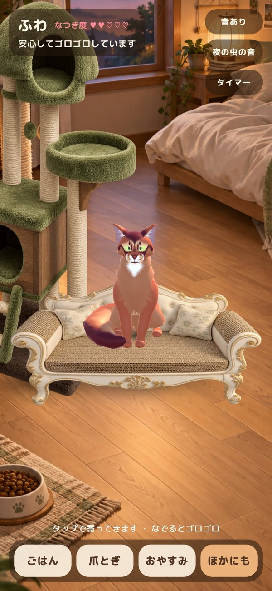
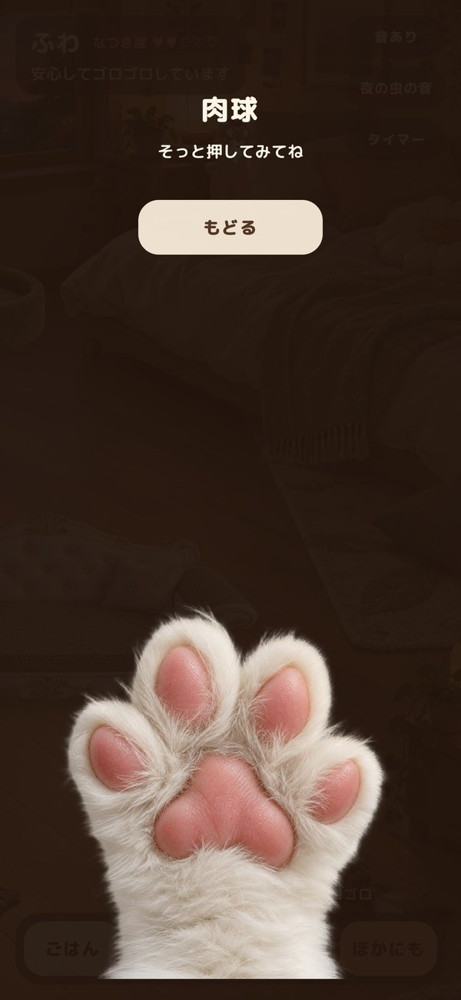
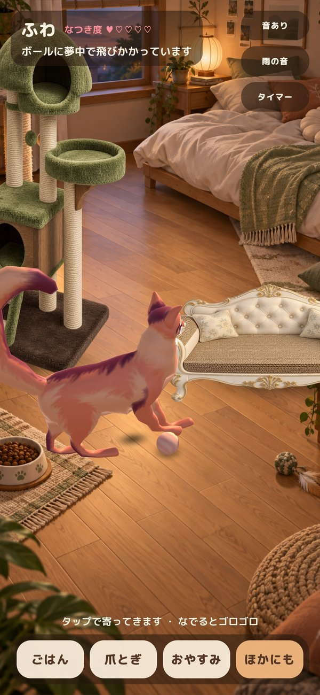

最終更新: 2026年10月2日
夕暮れの部屋で、一匹の猫が気ままに暮らしている。ごはんを食べ、ソファで爪をとぎ、キャットタワーでくつろぎ、眠くなったらベッドで丸くなる。画面にふれると、こちらに気づいて駆け寄ってくる。
猫のいる音は、そんな「猫のいる時間」をiPhoneの中につくるアプリです。この記事では、動画生成で作ろうとしていた最初の構想が、写真の部屋の中を3Dの猫が歩き回るUnityアプリになるまでを、判断の理由と失敗も含めて記録します。
2026年10月2日、バージョン1.0をApp Storeの審査に提出しました。この記事は、そこまでの判断と失敗の記録です。
前提: 今回作ったもの
一言で表すと、次のようなアプリです。
写真のように描かれた部屋で、3Dの猫が自分の意思で暮らし、さわると応えてくれる。雨の音と猫のゴロゴロを聞きながら眠れる、癒しのアプリ。

| 項目 | 内容 |
|---|---|
| 対応端末 | iPhone（縦向き） |
| エンジン | Unity 6.6（6000.6.0f1）、Built-in レンダーパイプライン |
| 画面 | UI Toolkit（コードだけで組み立て） |
| 猫のモデル | Somali Cat Animated ver 1.2（DreamNoms、CC BY 4.0）を glTFast で読み込み |
| 猫の動き | モデル付属の5クリップ＋骨の補正と経路探索で、15種類の行動を組み立て |
| 料金 | 1.0は無料。App内課金も広告もなし |
| ビルド | Windowsで Xcode プロジェクトを書き出し、GitHub Actions の macOS で署名して App Store Connect へ |
| 規模 | C# 25ファイル・約5,600行（2026年9月17日〜10月2日、コミット106件） |
このアプリの中心は、本物の3Dの猫です
先に、このアプリでいちばん手のかかった部分を書いておきます。画面の中の猫は、録画した映像でも、パラパラ漫画の絵でもありません。iPhoneの中で毎秒何十回も計算されて動いている、3Dのキャラクターです。
この違いは、見ているとすぐに分かります。
- 同じ動きが二度と再現されません。どこへ行くか、どの道を通るか、途中で立ち止まるか、何秒座っているかは、そのつど決まります。決まった順番で流れる映像ではないので、見飽きません。
- さわった場所に反応します。画面をタップすると、猫は今いる場所からその方向へ向きを変え、家具をよけながら歩いてきます。あらかじめ用意した「寄ってくる映像」を再生しているのではありません。
- 行動が途中で変わります。ごはんへ向かう途中でタップすれば、そこで向きを変えます。眠っている猫を起こすこともできます。
一方で、3Dには重さの問題があります。部屋まで3Dで作ると、スマートフォンでは電池を使い、見た目も安っぽくなりがちです。そこで「部屋は絵、猫だけ3D」という形にしました。計算するのは猫一匹分だけなので軽く、背景は絵のまま美しい、という組み合わせです。
この構成を成立させるために、次のような仕組みを作りました。
| 仕組み | していること |
|---|---|
| 猫モデルの読み込み | glTF形式（.glb）の猫を、glTFastというライブラリでアプリ起動時に読み込み、骨とアニメーションを組み立てる |
| 絵とカメラの一致 | 部屋の絵を描いたときのカメラの高さ・角度・画角をUnityのカメラに合わせ、絵の上の座標から床の3D座標を計算する |
| 歩く場所の管理 | 床を多角形、家具を円として持ち、目的地まで家具をよけた道順を可視グラフとダイクストラ法で求める |
| 家具との前後関係 | 家具の絵を「奥」と「手前」の2枚に分け、描画の順番をずらして、猫をその間に挟む |
| 足りない動き | モデルに入っている5つの動きを再生しながら、首や背骨の骨だけを計算で足して、食べる・毛づくろいなどの姿勢を作る |
つまり、3Dの猫を1匹だけ、絵の部屋の中で正しく生活させることに、開発のほとんどの時間を使っています。以降は、その試行錯誤の記録です。
最初の構想と、Unityを選んだ理由
最初はCodexが、動画生成（Sora）で猫の映像を作る案を進めていました。ところが、その API は2026年9月で提供が終わります。そこで「動画を流す」のではなく、「猫をその場で動かす」方向へ切り替えました。
ここで、開発者から素朴な質問が出ました。
- みんな Blender を使っているようだけれど、Unity でなくてもいいのか。
- Blender で猫を作って、普通のアプリで動かせないのか。
整理すると、Blender は猫のモデルや動きを 作る 道具で、Unity は作った猫を その場で動かし、さわると反応させる 道具です。アプリの画面そのものも Unity で作れます。
開発者がいちばん欲しかったのは「猫が自由に歩き回って、さわると反応する」ことでした。それには、決まった映像を流すのではなく、毎回その場で猫の行動を組み立てる必要があります。そこで Unity を選びました。Blender は、将来モデルに手を入れるときの道具として残しています。
写真の部屋に、3Dの猫を置く
部屋を3Dで作り込むと、スマートフォンでは重く、見た目も安っぽくなりがちです。そこで、背景は一枚の絵（Codexが用意した夕暮れの部屋）にして、その絵の中を3Dの猫が歩く形にしました。
ポイントは、絵を描いたときのカメラと、Unityのカメラを一致させる ことです。床の傾きと遠近感を絵に合わせると、絵の上の点（横と縦の位置）から、3D空間の床の上の点を計算できます。ごはんの器、ベッドの上、爪とぎの前など、猫が行く場所はすべて「絵のどこか」で指定しています。
家具も絵です。ソファ型の爪とぎやキャットタワーは、奥の絵と手前の絵の2枚を重ねて います。猫が座面に座ると、奥の背もたれより手前に、手前の縁より奥に描かれるので、本当に座っているように見えます。タワーの台の位置は、絵を描いたCodexが測って小さなJSONに書き、アプリがそれを読みます。
flowchart LR PHOTO["部屋の絵"] --> CAM["絵に合わせたカメラ"] CAM --> FLOOR["絵の位置 → 床の3D座標"] PROPS["家具の絵（奥・手前の2枚）"] --> FLOOR FLOOR --> CAT["3Dの猫が歩く・座る・跳び乗る"]
猫のモデル選び
最初の猫は、無料素材の四角い「キューブ猫」でした。動きは確認できますが、開発者の感想は率直に「猫もしょぼい」。本物の長毛の猫の写真を見せて「これぐらいは欲しい」とのことでした。
そこで有料のリアルな猫モデルを比較しました（動きが200種類以上あるもの、100種類以上あるもの、低ポリゴンで安いものなど）。ただ、開発者の判断は「購入はまだ先延ばし。まずは無料か安いもので作り込みたい」でした。
Sketchfab を探した結果、動きの入った無料のソマリ猫（CC BY 4.0）に決めました。見た目は格段に良くなりましたが、入っている動きは 立つ・歩く・座る・座ったまま・立ち上がる の5つだけです。この制約が、後の開発の大部分を決めることになりました。クレジットはアプリの「このアプリについて」に表示しています。
ない動きを、どう作るか
寝る、ごはんを食べる、毛づくろい、爪とぎ、へそ天。欲しい動きの多くは、モデルに入っていません。
最初は、骨（ボーン）を一本ずつ曲げて姿勢を作りました。首を下げ、前足を上げ、体を横に倒す。画面上ではそれらしく見える場面もありましたが、開発者からはっきり指摘されました。
- 寝ている姿が「物を横に倒しただけ」に見える
- へそ天が普通の猫の姿勢に見えない
- ごはんの時、前足がL字に長く伸びている
調べると、このモデルは前足の先が腕とは別の骨になっていて、腕を曲げると間の皮が引き伸ばされる作りでした。骨を曲げるほど不自然になるのは、作り方ではなくモデル側の限界だったのです。
そこで方針を変えました。
| 動き | 最終的な作り方 |
|---|---|
| 眠る | 3Dの猫を消し、Codexが描いた「丸まって眠る猫」の絵をベッドの上に表示する |
| へそ天 | このモデルでは自然に作れないため、入れない |
| ごはん | 前足は動かさず、首を前下に伸ばして口だけ器に届かせる |
| 毛づくろい | 前足を口元へ。数秒ごとに耳からほほへなでおろす「顔洗い」 |
| ボール遊び | 身を低くしてお尻をふりふり、跳びかかって毛糸玉を転がす |
「3Dで作れないところは絵に任せる」という判断は、部屋も家具も絵でできているこのアプリだからこそ自然になじみました。

Claude Code × Codexの役割分担
このアプリは、2つのAIと開発者の3者で作っています。途中でどちらかのAIが利用上限に達すると、もう一方が作業を引き継ぎました。
| 担当 | 主な仕事 |
|---|---|
| 開発者 | 何を作るか・何をやめるかの判断、実際に触った感想、Unity Hub の操作、秘密情報の登録 |
| Codex | 絵（家具、肉球、ねこあし、眠る猫）、音素材の収集と加工、App Store 用の文章、課金まわりの調査 |
| Claude Code | Unity のコード全般、動作確認、Codex の成果物の確認と組み込み、指示書の作成 |
Codexへの依頼は、docs/codex/ に指示書（Markdown）として書き、開発者がその1行をCodexへ貼る形にしました。指示書は12本になりました。
同時に作業するためのルールも、失敗から生まれています。
- 同じファイルを2つのAIが同時に書き換えない（指示書で、触ってよいファイルを明記する）
- Unity Hub と Unity エディターを勝手に閉じない・再起動しない（一度、テスト中にUnityが閉じられる事故がありました）
- 開発者のマウスやキーボードを動かさない（一度、別の画面をクリックしてしまったことがあります）
マウスを使わずに動作を確かめる
開発者が同じパソコンで別の作業をしている間も、動作確認を続ける必要がありました。そこで、Unityのエディター内に DevBridge という小さな仕組みを作りました。決まったフォルダに小さなファイルを置くと、Unityがそれを読んで操作します。
- 再生の開始・停止、スクリプトの再読み込み
- 猫に「ごはん」などの行動をさせる、ボタンを押す、猫をタップする
- iPhone と同じ縦長の比率で画面を撮影する（画面上下の、ホームバーなどの危険な領域を赤く塗る）
- App Store 用のサイズ（1290×2796）で撮影する
- 猫を真横から撮影する（足の長さや、床から浮いていないかの確認）
- ボタンの真ん中をタップしたら、本当にそのボタンに届くかを調べる
- 猫が各場所へ家具を避けて行けるかを一覧にする
姿勢の調整は、ほぼすべてこの「真横からの撮影」で確認しました。人の目で見て不自然なものは、数値ではなく画像で判断するのがいちばん確実でした。
見つかった問題と、その原因
| 症状 | 原因 | 直し方 |
|---|---|---|
| 猫がソファをすり抜ける | 立ち位置が、ソファの絵2枚の間（奥行きの帯）に入っていた | 立ち位置を手前の絵より前に出す |
| キャットタワーのボタンを押しても動かない | ソファの範囲を広げた結果、タワー前の立ち位置が「家具の中」と判定された | 家具の中の地点へは、外側から近づく場合だけ入れるようにする |
| Unity が何度も落ちる | 画面の部品が失われると毎フレームエラーが出て、ログが64MBまで膨らんでいた | 部品がないときは何もしないようにする |
| ボタンが押せない | テスト中に Unity の画面が横向きのまま残っていた | 縦向きに戻すメニューを追加 |
| ゴロゴロが鳴りっぱなし | 座るたびに毎回ゴロゴロを鳴らしていた | なでた時・ボタンを押した時・寝ている時だけ鳴らす |
| 眠る猫がベッドから落ちそう | 表示位置が布団の端だった | 布団の真ん中へ移動 |
どれも、開発者が実際に触って「おかしい」と言ったところから見つかりました。
足し算より、引き算
開発の後半は、機能を増やすよりも減らす判断が多くなりました。
- 甘噛み：猫が指を甘噛みする動きでしたが、「何が違うのかよくわからない」ためメニューから外しました。
- くるくるおもちゃ：輪の中をボールが回るおもちゃを、Codexが絵を描き、動きまで組み込みました。でも、入れてみて不要と判断しました。
- クッションベッド：丸いクッションで眠る絵まで作りましたが、「寝るのはベッドの上で」と判断し、外しました。
- へそ天・2匹目の猫：不自然さが残るため、今回は入れません。
作ってから外すのは一見むだに見えます。でも、実物を見て決められるのは、AIと一緒に速く作れるからこその進め方でした。
音と、手ざわり
- 環境音は3種類（雨、夜の虫、暖炉）。すべてCC0の素材を、ループのつなぎ目や音量をそろえて加工しています。長い音は、iPhoneのメモリを使いすぎないよう、少しずつ読み込みながら再生します。
- 猫の声は、鳴き声12種類にトリル（甘えるような小さな声）3種類。毎回ランダムに選び、声の高さも少しずつ変えています。食事、毛づくろい、爪とぎ、足音などの音も別に用意しました。
- 猫をなでると、iPhoneの振動でゴロゴロが手に伝わります。
- おやすみタイマーを使うと、音がゆっくり小さくなって止まります。画面を消しても、マナーモードでも音は流れ続けます。
肉球とねこあし
猫アプリとして譲れなかったのが「肉球」です。画面いっぱいの白い前足を押すと、指がキュッと閉じます。むちむちの「ねこあし」は、画面の左右をさわると、そちら側の足がふみふみします。どちらもCodexが描いたオリジナルの絵で、ずれないよう複数の絵をぴったり重ねて切り替えています。

課金を、1.0では見送りました
当初は買い切りの「プラス」（610円）を用意し、夜の虫と暖炉の音、30分・60分のタイマー、肉球とねこあしの無制限を有料にする予定でした。実装も、価格の取得も、購入の復元も、ひととおり動く状態まで作りました。
ところが提出の直前で、Appleの決まりに行き当たりました。そのアプリで初めての買い切り商品は、アプリのバージョンと一緒に審査へ出さなければならないのです。ところがAPIからも管理画面からも、課金をこの1.0の提出物に加えることができませんでした。
ここで開発者が決めたのは、公開を優先することでした。
課金が難しかったら、最初はいいかもしれない。そもそも見てくれる人があんまりいない時点で問題なので。
そこで1.0は、すべての機能を無料にしました。押しても何も起きない購入ボタンを残すより、全部開けてしまうほうが筋が通っています。有料化は、新しい内容を足せる次のバージョンで、その内容と一緒に出します。いま無料で使えるものを、あとから有料に戻すことはしません。
- 広告は入れず、登録やログインもありません。
- 猫の名前やなつき度などの設定は、iPhoneの中にだけ保存します。
Macを持たずに、iPhoneアプリを出す
開発に使っているのは Windows のパソコンで、Mac はありません。当初の計画は、GitHub Actions の Linux で Unity から Xcode プロジェクトを書き出し、macOS で署名して送る、というものでした。
この計画は、途中で崩れました。Unity の無料ライセンスが、CI（クラウドのビルド機）で有効化できなくなっていたのです。手動での有効化そのものが廃止されており、どう設定しても「ライセンスファイルがない」と言われます。
そこで、役割を分けました。
- Windows の Unity で Xcode プロジェクトを書き出す（ライセンスは手元にある）
- それを圧縮して GitHub のリリースに置く
- GitHub Actions の macOS が受け取り、証明書を作って署名し、App Store Connect へ送る
ここでも、小さな落とし穴がいくつもありました。
| つまずき | 原因 | 直し方 |
|---|---|---|
| macOS で解凍できない | Windows の ZIP はファイル名の区切りが「\」になる | tar 形式で固める |
| 署名が通らない | 実機を1台も登録していないため、自動の署名設定が使えない | 配布用の証明書とプロファイルを毎回その場で作って指定する |
| アップロードは成功するのに、ビルドが現れない | Xcode がビルド番号を勝手に次の空き番号へ振り直していた | その自動採番を切り、Unity 側の番号を正とする |
| 審査へ出せない | ビルドに暗号化の申告が付いていなかった | 添付と同時に申告を自動で付ける |
App Store Connect 側の作業も、管理画面を手で触るのではなく、API を呼ぶスクリプトにまとめました。バージョンの作成、日本語の説明文、スクリーンショットの差し替え、価格と配信地域、ビルドの紐づけ、審査への提出まで、すべて何度でもやり直せます。
- App Store の紹介文とキーワード
- アプリの実画面から撮ったスクリーンショット6枚（iPhone）とiPad用1枚
- 公開前チェック用のスクリプト（34項目）
- サポートページとプライバシーポリシーの公開

現在の状況と、これから
2026年10月2日、バージョン1.0を App Store の審査に提出しました。いまは審査の結果待ちです。
- 審査を通過したら公開する
- 実機で使ってみて、気になるところを直す
- 毛色の追加や模様替えなど、新しい内容を次のバージョンで足す。そのときに「プラス」を改めて出す
- 寝そべりやへそ天など今回見送った動きは、動きの入った猫モデルを導入できたときに取り組む
まとめ
「猫が自由に歩き回って、さわると反応する」。この一文から始まったアプリは、2週間で審査に出せるところまで来ました。残ったのは、次の3つの判断です。
- 猫だけを3Dにして、部屋は絵に任せる
- 3Dで無理のある姿勢は作らず、絵に置きかえる
- 触ってみて、いらないものは外す。出せないものは、出せる形に変える
AIが得意なのは、速く作って、速く直すことです。何を残して何をやめるかを決めたのは、毎回、実際に画面を触った開発者でした。
クレジット
- 猫のモデル：Somali Cat Animated ver 1.2 by DreamNoms（CC BY 4.0）
- 環境音・猫の鳴き声・効果音：CC0／パブリックドメインの素材（出典はアプリ内とリポジトリに記載）
- フォント：M PLUS Rounded 1c（SIL Open Font License）
- 部屋・家具・肉球・ねこあし・眠る猫の絵：このアプリのために作成したオリジナル